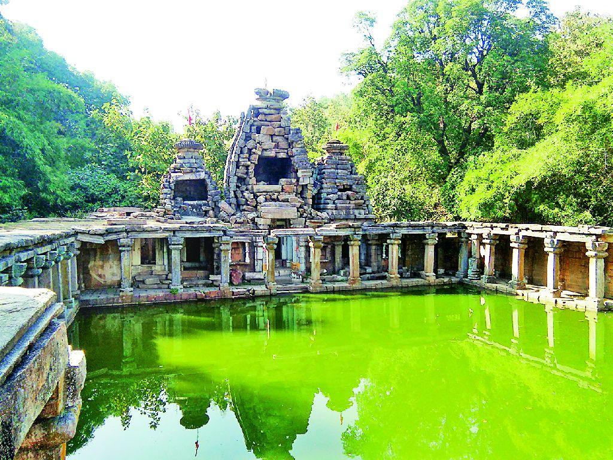
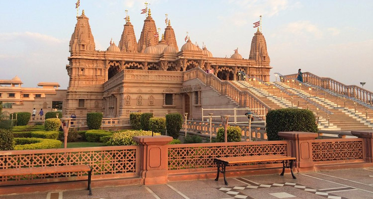
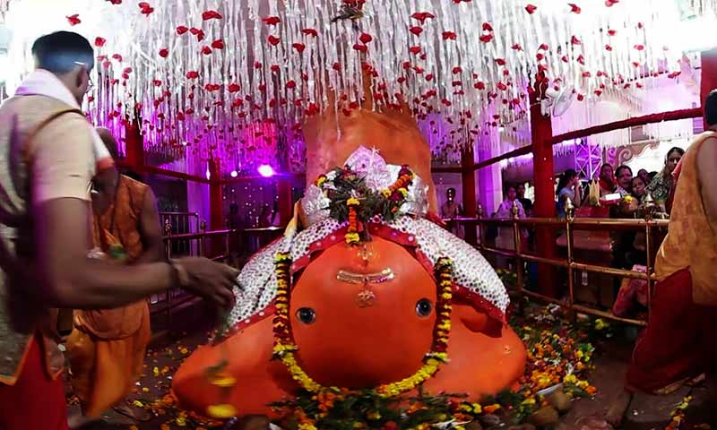
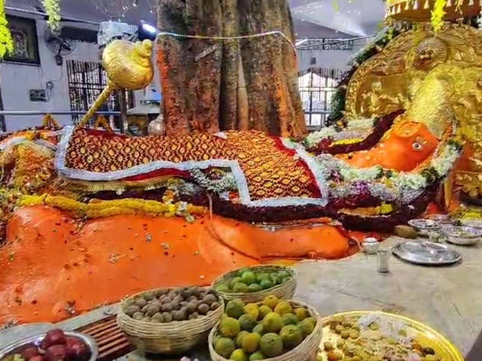

Gad Mandir
 Timing:7am-8pm
Timing:7am-8pm
History
Ramtek hosts a historic temple of Rama. It is believed that Ramtek was the place where Rama, the Hindu god, rested while he was in exile, Hence it is named Ramtek.[4] According to Hindu mythology, the ashram of the Hindu sage Agastya was situated close to Ramtek. The present temple was built by Raghuji Bhonsale, the Maratha ruler of Nagpur in 18th century after his victory over fort of Deogarh in Chhindwara.This place is also related to the Sanskrit poet Kalidasa. It is believed that Kalidasa wrote Meghadūta in the hills of Ramtek.
Ramtek has got Historic temple of lord Rama. It is believed that Ramtek was the place where Rama, the Hindu god, rested while he was in exile. Legend has it that the aashram of great Hindu sage Agastya was situated close to Ramtek. While the sages performed religious rites, the demons used to disrupt their activities and slayed a great number of holy men. Lord Rama was distressed to hear about this, and took a vow to relieve the world from the demons. ‘Tek’ means vow in local language, hence the word Ramtek comes from ‘Vow of Ram’. Thus it is believed locally that whoever takes a vow at Ramtek is blessed by the gods for its fulfillment. The ‘padukas’ of Lord Ram are believed to have been worshipped here for centuries. The present temple is believed to have been built by the King of Nagpur Raghuji Bhonsale,after his victory over fort of Deogarh in Chindwara.
This place is also famous for its relation with Great poet Kalidasa. Kalidasa has written Meghdootum in hills of Ramtek. Late Indian Prime Minister Mr. Narsimha Rao contested his election from Ramtek Constituency.
Ramtek is also known for ancient Jain temple with various ancient statues of Jain Tirthankara. It became more popular when one of the top Digambar Jain Acharyas, Acharya Vidyasagar visited and stayed in Ramtek in 1993, 94 and 2008 for the four months of chaturmas during the rainy season. With his inspiration, a big Jain temple has been constructed. Jain disciples report many miracles attributed to the ancient Jain statue and so the place is more popularly called as Atishayakshetra Ramtek ji by them.
location
Kapurbawadi

Timing:24 hrs
History
One of the stunning 1200 year old temple in Maharashtra (Nagpur) named as Karpur Baoli . Karpur means Camphor and Baoli means water tank. It is said that the Water in the well has camphor smell and was use as medication. It is an ancient Baoli few kilometers away from the temples at Ramtek and there is a dilapidated temple locally called as Kali Mata Temple stands on one end of the Karpur Baoli.
Karpur baoli is dedicated to 6 goddess namely Chamunda , Bhairavi , Ingalaj, Kali , Ranchandi and Kapurta . It houses in the garbhagriha a fragmentary part of sculptural panel is placed inside.Constructed by the rulers of the Yadava dynasty between the 10th and 12th centuries A.D., this old baoli is dedicated to six goddesses and is a few km from the Ramtek temples. A ruined temple known locally as the Kali Mata Temple sits on one end of the Karpur Baoli.28 Dec 2023
The temple is also provided with pillared corridors. This temple and baoli seem to be of later date and may be assigned 9th-10th century C.E. on the stylistic ground or Hemadpanti style. Locals claimed that the water level of the pond never goes down. It is a lesser explored place of Maharashtra. The combination of pond and hills behind the temple makes it look more scenetic.
A traveller may spend many serene hours wandering around the temple complex, gazing at the magnificent architectural edifice and the carvings. Or may sit near the baoli .
Location
Koradi Temple
 Timing: 6am-11pm
Timing: 6am-11pm
History
Shree Mahalaxmi Jagdamba Mata Mandir is a Hindu temple located in Nagpur, Maharashtra, India. The temple is dedicated to the Hindu goddess Jagdamba Mata, also known as Mahalaxmi. The temple is a popular pilgrimage destination for devotees from across India and the world, and it is renowned for its spiritual significance and architectural beauty.
Koradi Shree Mahalaxmi Jagdamba Mata Mandir popularly known as Koradi Devi Temple Located in Koradi City near Nagpur. It is one of the famous devi temple in VidarbhaThere are 51 Shakti-peeths of Devi. The Koradi Devi Temple is consider as one of the Shakti-peeths. On Navratri more than 50,000 lamps were lighted at the temple premises.In response to his fervent prayers, a daughter of divine beauty was born to him. From the moment he laid eyes on her, King Jholan felt the presence of Adi Shakti, the primal energy of the universe, manifesting in her form. This divine daughter not only became his guiding light, providing him with clarity during times of decision-making but also stood by him in times of adversity.
There was an instance when the king went to war, and she, with her innate sense of justice and divine insight, accompanied him. She played a pivotal role in ensuring fairness, not just for King Jholan, but also for his adversaries. It was yet another affirmation of the divine Shakti she embodied.
Close to this sacred spot lies a Kund and a Goumukh, from which a natural stream of cool water flows. Even today, one can find stones imprinted with intricate Rangoli patterns in the vicinity.
The temple, dedicated to Devi Jakhumai, stands as a testament to ancient architecture, intertwining beauty with spirituality. Devotees believe that with her blessings, they can achieve the four pillars of a fulfilled life: Arth (wealth)
Upon their victorious return from the battle, she, as the embodiment of Adi Shak
location
Swaminaarayan Mandir

Timing:10am-8pm
History
Swaminarayan Bhagwan , the founder of the Swaminarayan Sampraday, established temples, known as mandirs (Devnagari: मन्दिर), as part of his philosophy of theism and deity worship. These mandirs are known as Swaminarayan Hindu templess.
He constructed nine temples in the following cities; Ahmedabad, Bhuj, Muli, Vadtal, Junagadh, Dholera, Dholka, Gadhpur & Jetalpur. In these temples he installed images of various Hindu gods, such as NarNarayan Dev, LaxmiNarayan Dev, RadhaKrishna Dev, RadhaRaman Dev, Revti-Baldevji, Madan Mohan Dev etc.[2] Each of these nine original temples fall either under the NarNarayan Dev Gadi, Ahmedabad or the LaxmiNarayan Dev Gadi, Vadtal depending on their geographical location.
One of the most prominent features of the heritage of Swaminarayan Sampradaya is temple architecture. The images in the temples built by Swaminarayan Bhagwan are the evidence of the priority of Swaminarayan Bhagwan . All of the temples constructed during his life show some form of Krishna, and all temples since have such worshipable murtis. In Vadtaldham he as a god concentrated his own life form known as Harikrushna Maharaj. In the temples of the dioceses of Ahmedabad and Vadtal, they are predominantly a central altar or a shrine. Human forms are predominant but for a known exception of a Hanuman temple at Sarangpur, where Hanuman is the central figure.The temples have accommodations for sadhus built next to them. Stones were quarried in far places and carried to the temple sites.
Swaminarayan temples, like other Hindu temples, have walkways around the central shrine to allow worshipers to circumambulate the shrine. These are often decorated with designs and inlaid marble. The main shrine area is divided by railings. One side of the railing is reserved for women, as Swaminarayan propagated that men and women should be separated in temples to allow full concentration on god. Men do a specified number of prostrations (as decided by themselves). In front of the men's section, there is a small section reserved for ascetics and special guests. There is great variety in form and nature of the central images, in front of which are gold- or silver-plated doors that open during darshan.
Today there are over a thousand Swaminarayan temples,spread across five continents, which come under the above two Gadis (seats) of the Swaminarayan Sampraday.
The Swaminarayan Temple, also known as the Akshardham Temple, is one of Nagpur's newest structures, located on the city's outer ring road. The temple, also known as Swaminarayan Temple, is well-equipped with amenities such as a parking lot, a large kitchen, a restaurant, and a children's play area. The Swaminarayan Temple Nagpur has two stories and is notable for its architecture. You should visit this temple after 4:00 p.m. because it is beautifully decorated in the evening and the sight is mesmerizing. The Swaminarayan Temple entry fee is free of cost.
The BAPS Swaminarayan Temple is located in Wathoda, Nagpur, on the inner ring road. The temple first opened its doors in 2013. Every evening, a significant number of devotees flock to the shrine. Satsang is held regularly, and the temple places a special emphasis on the development of youngsters. The Swaminarayan Temple timings are from 8:00 am to 8.30 pm.
location
Ganesh tekdi Mandir

timing:8am-10pm
History
Situated on the Station Road in Nagpur, Sri Ganesh Mandir Tekri is a Hindu shrine dedicated to Lord Ganesha. The temple boasts of rich architecture; the idol of Ganesha can be seen seated under a tree inside the premises of the temple. The busiest time of the day is during early morning or evening
The temple carries huge importance among Nagpurians who daily visit the temple. The name Tekdi Ganpati is attributed to its location as the temple stands on a hill which is called Tekdi in the Marathi language. Temple History and Temple Legend: Tekdi Ganesh Temple is said to be 250 years old.t's name is given as Tekdi Ganapati because it is constructed on a hill and in Marathi Language a hill is called as a Tekdi. It is believed to be approximately 250 years old. When first built, there was a ordinary tin shade and a small platform. It started improving after 1970, after the Military defense took its possession and in 1965 Late honorable then defense Minister Shri Yashwantrao Chavan arranged the possession of the temple and adjoining land to temple trust. In 1978 the big project of the construction of Ganesh temple started in full swing. All the devotees generously contributed heavy amounts for the construction and the resultant temple got present shape in 1984.
The main role was played by Late Shri Ganpatrao Joshi and other devotees who were taking active part in this construction. But it was found that the allotted land was comparatively small in respect of huge crowd of devotees. Again the trustees of the temple appealed to ministry of defense to approve sanction for some more expansion of the premises and in 1995 fruitful result came and 20,000 more Sq. feet land was added to previous premises. Now the new project intended is the beautification of the surroundings of this temple like lawns, water fountain and free parking zone etc.
It is said that this idol is self existent. Originally this idol was very small in shape, but gradually it grew bigger and increased as per present situation. The idol is having golden decoration at forehead. Other silver ornaments are also available. In all these ornaments particularly Mukut (a diadem) is specially exhibited on Chaturthi and Ekadashi only. It is said by devotees that this t
Jam savli

timing:6am-10pm
History
Jam Sawli Hanuman Temple is now returning to normalcy after nine months of closing due to compulsory COVID-19 restrictions. The temple is now open for the devotees with Standard Operational Procedures (SOP). The Jam Sawli temple is one of the popular destinations for the devotees as this temple is said to have miraculous power to cure mentally ill people. This temple is situated in the Chindawara district of Madhya Pradesh state and is about 67 km away from Nagpur.
Land Revenue Department of Madhya Pradesh records the temple as almost 100 years old. Talking to Transcontinental Times, Hiraji Patel, the manager of the Jam Sawli temple said, “The temple is older than the record says. I am 67 years old and my grandfather had told me about this temple. So, you can imagine how old this temple is!
Legend says that Lord Hanuman had rested at this place for some time when he was taking ‘Sanjeevani Buti’ for comatose Shri Laxman during the war between Lord Ram and Ravana in Ramayana. Devotees who visit this temple are from nearby as well as distant places. People from around 11 districts come here to worship Lord Hanuman. As per popular belief, it is believed that no one can visit the Jam Sawli temple unless he is called there.
On Tuesdays and Saturdays, the number of devotees who come to worship Lord Hanuman ranges from fifty-thousand to one-hundred thousand. On the eve of Hanuman Jayanti (birthday of Lord Hanuman), nearly three hundred thousand devotees gather at this temple.